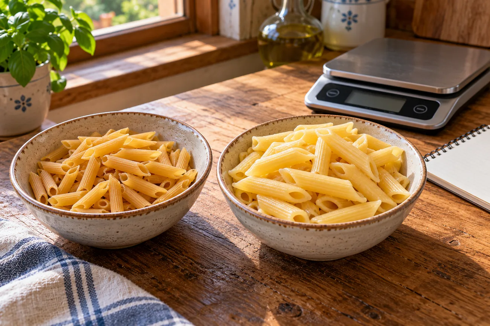

RUBRICA 08 · GUIDA 04 · NAZIONALE · 23 OTTOBRE 2026
Porzioni, pesi crudi e cotti: usare correttamente le tabelle CREA
Un errore comune è prendere i valori della pasta cruda e applicarli ai grammi della pasta cotta. L'acqua modifica il peso. Questa guida ti insegna a riconoscere la tabella giusta, calcolare carboidrati e calorie della quantità utilizzata e capire il costo reale della parte commestibile.

- Crudo con crudo, cotto con cotto: ogni peso va confrontato con la voce corrispondente della tabella nutrizionale.
- Le quantità contano: il dato «per 100 g» non è automaticamente quello della tua porzione.
- Una ricetta ha più ingredienti: somma carboidrati e calorie di tutti quelli utilizzati e dividi per le porzioni effettive.
1. Perché pasta, riso e legumi cambiano peso durante la cottura?
Pasta e riso assorbono acqua e in genere diventano più pesanti. Altri alimenti possono perdere acqua o grassi e risultare più leggeri. L'aumento di peso della pasta non significa che si siano aggiunti carboidrati dall'acqua. Tuttavia i nutrienti possono anche disperdersi nel liquido di cottura: la relazione fra valore crudo e cotto non è sempre esatta.
Il CREA, nella tabella C delle variazioni di peso, riporta per la pasta di semola corta bollita un fattore indicativo di 1,88 (188 g cotti da 100 g crudi). Per quella lunga riporta 2,10. Sono dati di riferimento, non garanzie per tutte le marche e cotture.
Peso cotto stimato = peso crudo × fattore di resa
Per la pasta corta: 80 g crudi × 1,88 = circa 150 g cotti. Se la tua pasta assorbe una quantità diversa di acqua, il peso reale può essere differente. Per la massima precisione pesa il prodotto nel momento richiesto dalla ricetta.
2. Due schede CREA diverse: pasta cruda e pasta bollita
Le schede ufficiali distinguono chiaramente «Pasta di semola» (codice 000800) e «Pasta di semola, cotta, bollita» (codice 000805). Riportano valori per 100 g riferiti a stati di preparazione differenti.
| Dato CREA | Pasta di semola cruda | Pasta di semola cotta |
|---|---|---|
| Codice CREA | 000800 | 000805 |
| Carboidrati disponibili per 100 g | 72,7 g | 37,3 g |
| Energia per 100 g | 341 kcal | 175 kcal |
| Quantità dell'esempio | 80 g crudi | 150 g cotti |
| Carboidrati della quantità | 58,2 g (80 × 72,7 / 100) | 56,0 g (150 × 37,3 / 100) |
| Calorie della quantità | 273 kcal (80 × 341 / 100) | 263 kcal, circa (150 × 175 / 100) |
Perché i risultati non coincidono esattamente? Si tratta di composizioni medie di due alimenti catalogati separatamente, con assorbimento d'acqua, possibile perdita di nutrienti e arrotondamenti. L'esempio di 150 g cotti è solo una resa approssimativa di 80 g crudi, non un'uguaglianza nutrizionale perfetta. Non sommare i valori del crudo e del cotto: sono due modi alternativi di descrivere una quantità di alimento.
Attenzione anche agli arrotondamenti della tabella: CREA indica 175 kcal ogni 100 g di pasta bollita, ma per la propria porzione di 200 g riporta 349 kcal, non esattamente 350. I valori pubblicati sono arrotondati a partire da dati più precisi. Per questo i calcoli con i numeri visualizzati possono differire di circa una kcal da un valore di porzione riportato direttamente nella scheda CREA. Non interpretare tale differenza come un errore di cottura.
3. Calcolare carboidrati e calorie della tua porzione
Carboidrati disponibili (g) = peso dell'alimento (g) × carboidrati per 100 g ÷ 100
Energia (kcal) = peso dell'alimento (g) × kcal per 100 g ÷ 100
Esempio verificabile: 80 g di pasta di semola cruda secondo CREA 000800. Carboidrati = 80 × 72,7 ÷ 100 = 58,2 g (arrotondati). Energia = 80 × 341 ÷ 100 = 273 kcal (arrotondate). Questi numeri si riferiscono alla sola pasta senza condimento.
Se aggiungi olio, formaggio, pane, legumi o altre quantità, devi conteggiare anche ogni aggiunta con dati adatti. Non puoi dedurre le calorie di un piatto sommando soltanto i carboidrati: anche grassi e proteine apportano energia.
4. Legumi secchi e cotti: un errore frequente
La tabella C CREA indica, per la bollitura, una resa indicativa di 230 g di fagioli cotti per 100 g di fagioli secchi e 290 g di ceci cotti per 100 g di ceci secchi. Il fattore varia per tipologia, ammollo, durata e condizioni di cottura. Non significa che le calorie si moltiplichino per 2,3 o per 2,9: il peso aumenta soprattutto perché viene assorbita acqua.
Se la ricetta dice «180 g di borlotti bolliti e scolati», non sono 180 g di fagioli secchi. Cerca la voce specifica per i fagioli cotti o l'etichetta del prodotto realmente usato. Le conserve in scatola scolata possono avere una composizione diversa da quella dei legumi cotti partendo dal secco.
5. Parte edibile: quanto cibo resta dopo gli scarti?
Le tabelle di composizione esprimono comunemente i nutrienti per 100 g di parte edibile, ossia la parte che si mangia dopo aver escluso buccia, nocciolo o altri scarti, quando previsti. Devi quindi distinguere il peso acquistato dal peso utilizzato nella ricetta.
Esempio esclusivamente matematico: acquisti 1.000 g di un prodotto ipotetico, di cui il 75% è commestibile. Restano 750 g utilizzabili.
Se lo paghi 2,40 €/kg, il costo della parte commestibile è 2,40 € ÷ 0,75 = 3,20 €/kg edibile. Per 250 g di parte edibile spenderai 3,20 × 0,250 = 0,80 €. Sono prezzi e percentuali inventati per mostrare il metodo, non prezzi reali di ottobre 2026.
6. Una ricetta: pesare, calcolare, dividere
Per Me ha pubblicato una ricetta originale di borlotti, riso integrale e pomodori per due persone. Ingredienti dichiarati: 180 g borlotti cotti e scolati, 140 g riso integrale cotto e scolato, 200 g pomodori, 20 g olio extravergine.
Questi sono valori stimati, ottenuti dalle singole schede CREA. Sono validi per le quantità e per il numero di porzioni indicati nella ricetta: se cambi ingredienti, quantità, peso crudo/cotto o numero di persone devi rifare il calcolo. La fotografia del piatto è illustrativa: non misura né certifica grammi o calorie.
7. Cinque errori da evitare
- Calcolare 150 g di pasta bollita utilizzando la tabella per 150 g di pasta cruda.
- Trattare una porzione standard CREA o SINU come prescrizione personale obbligatoria.
- Usare per i legumi in scatola i valori dei legumi secchi senza riconoscere la differenza.
- Dimenticare olio, condimenti, pane o altre aggiunte nel totale dei carboidrati e delle calorie.
- Presentare prezzi ipotetici o valori medi di laboratorio come quantità «esatte» del piatto preparato.
8. Esercizi per controllare di avere capito
Esercizio A. Il pacco indica 70 g di carboidrati per 100 g di alimento secco. Ne pesi 60 g secchi. Quanti grammi di carboidrati sono?
Mostra la soluzione A
(70 × 60) ÷ 100 = 42 g di carboidrati. Non serve sapere quanti grammi peserà il prodotto dopo la bollitura per calcolare i nutrienti a partire dal suo peso secco.
Esercizio B. Cuoci 100 g di pasta corta secca: secondo il fattore medio CREA 1,88, quanto potrebbe pesare dopo bollitura?
Mostra la soluzione B
100 × 1,88 = circa 188 g di pasta cotta. È una stima indicativa: acqua assorbita e cottura possono cambiare il peso reale.
Esercizio C. Una ricetta completa contiene 80 g di carboidrati disponibili e 600 kcal, ed è divisa in quattro porzioni uguali. Quanto vale una porzione?
Mostra la soluzione C
80 ÷ 4 = 20 g di carboidrati disponibili; 600 ÷ 4 = 150 kcal. È un esempio matematico inventato, non una ricetta reale.
Con insulina o altri farmaci che possono causare ipoglicemia, i conteggi alimentari non autorizzano a decidere o cambiare da soli le dosi. Il peso e la composizione stimata degli alimenti non predicono perfettamente la glicemia. Con malattie renali o altre condizioni, verifica le porzioni con i professionisti curanti.
Fonti ufficiali e limiti di questa guida
Controllo documentale 23 ottobre 2026. Tutte le stime riportate dalle schede CREA sono riferite ai dati pubblicati e arrotondate per chiarezza; la resa cambia con la preparazione. Non è stata svolta una revisione dietistica indipendente né una prova con lettori reali.
- CREA — Presentazione dati: variazioni in peso e fattori di resa della cottura, tabella C.
- CREA — Pasta di semola cruda, scheda 000800: 341 kcal e 72,7 g carboidrati disponibili per 100 g.
- CREA — Pasta di semola bollita, scheda 000805: 175 kcal e 37,3 g carboidrati disponibili per 100 g.
- IEO — Banca Dati di composizione degli Alimenti: definizione di parte edibile ed energia.
- Per Me — Come verifichiamo le informazioni e i limiti editoriali.
Torna alla rubrica Dieta mediterranea
Apri la ricetta con foto, carboidrati e kcal per porzione
Vai alla pagina Facebook di Per Me per scrivere
Nei commenti pubblici non condividere dati sanitari, documenti personali o credenziali.